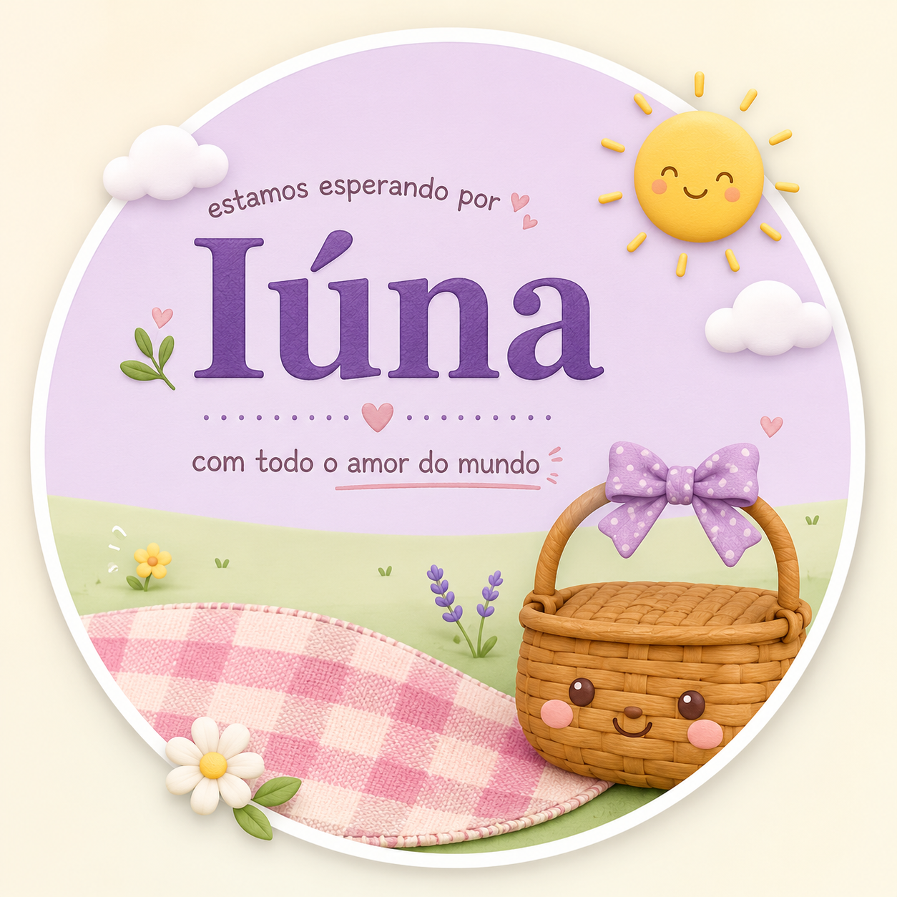
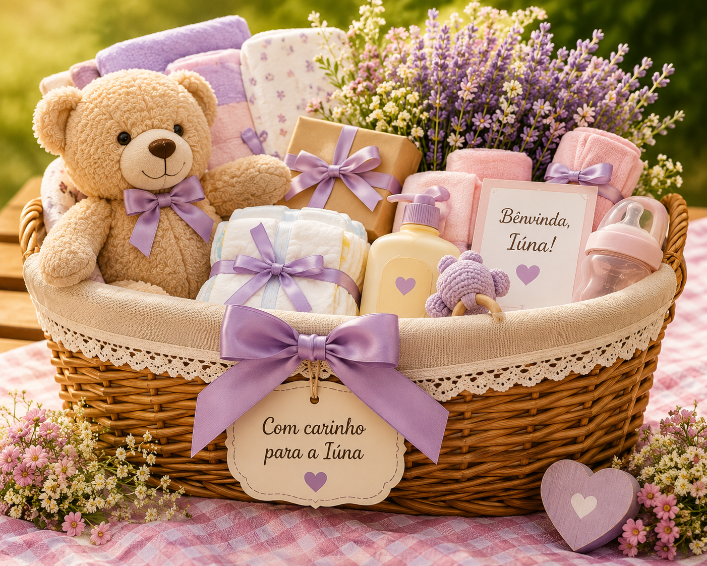

Bagé05/09/2026 • 15h
♥
✿
❀
Uma nova vida está chegando
A pequena Iúna já está transformando nossos dias.
Criamos este cantinho para celebrar a chegada da nossa bebê, reunir família e amigos e guardar lembranças de uma espera cheia de amor.
Porto Alegre03/10/2026 • 15h

O estilo da nossa festa
Uma tarde leve, familiar e cheia de carinho.
O Chá da Iúna terá clima de piquenique, com natureza, comidinhas gostosas, brincadeiras, afeto e muitas memórias para guardar.
Piquenique em família
Uma tarde acolhedora para adultos e crianças.
Comidinhas com carinho
Sabores simples, frescos e feitos para compartilhar.
Memórias especiais
Fotos, recadinhos, abraços e histórias para a Iúna.
Duas cidades, uma celebração
Escolha o encontro em que você estará conosco.
A Iúna será celebrada junto da família em Bagé e dos amigos em Porto Alegre.
Família♥
Chá da Iúna em Bagé
Um encontro com nossas raízes.
- Data
- 05 de setembro de 2026
- Horário
- 15 horas
- Local
- Sítio Mãe Velha- R. Profeto Ferreira Nunes, 324, São Domingos
- Cidade
- Bagé — RS
Amigos♥
Chá da Iúna em Porto Alegre
Um encontro com os amigos da caminhada.
- Data
- 03 de outubro de 2026
- Horário
- 15 horas
- Local
- Rua Martins de Lima, 25
- Bairro
- Partenon — Porto Alegre/RS
Lista de Presentes
Escolha um presente com carinho
Preparamos uma lista com muito amor para ajudar na chegada da nossa pequena Iúna. Clique no botão abaixo para ver todos os presentes disponíveis, reservar um item e deixar sua mensagem.

Lista de Presentes
Cada presente foi escolhido pensando nos primeiros meses da Iúna. Sua presença já é um grande presente, mas, se desejar, você pode escolher um item da nossa lista.
🎁 Ver Lista de PresentesNosso álbum
Momentos de uma história que já começou.
Preparativos, encontros e lembranças compartilhadas com carinho.
♡
Nossa esperaCada detalhe pensado com carinho.
✿
PreparativosUm cantinho feito com amor.
☀
FamíliaHistórias para contar à Iúna.
Área reservada
Área dos Pais
Administre confirmações, presentes, recadinhos, fotos e informações dos eventos.
♥
À nossa família e aos nossos amigos
Obrigado por fazerem parte da história da nossa pequena desde o começo.
A chegada da Iúna já encheu nossos dias de sonhos e esperança. Cada abraço, palavra e gesto de carinho torna essa espera ainda mais bonita.
Com amor, os pais da Iúna.